The Converging-Diverging Nozzle with the Buttons: Half a Nozzle and a Symmetry Plane
Paste the wall of the nozzle, then build everything else with the interface: seven points, eleven lines, four blocks, the node distribution, the extrusion and the physical groups. Only the upper half is meshed; in OpenFOAM the axis is a symmetry plane, and the half gives the same Mach number as the full nozzle.
Gmsh · Tutorial 2.3.1
La tobera convergente-divergente con los botones: media tobera y plano de simetría
Se pega la pared de la tobera y todo lo demás se hace con la interfaz: siete puntos, once líneas, cuatro bloques, el reparto de nodos, la extrusión y los grupos físicos. Se malla sólo la mitad de arriba; en OpenFOAM el eje es un plano de simetría, y la mitad da el mismo Mach que la tobera completa.
Gmsh · Tutorial 2.3.1
Die Laval-Düse mit den Schaltflächen: halbe Düse und Symmetrieebene
Die Düsenwand wird eingefügt, alles Übrige entsteht über die Oberfläche: sieben Punkte, elf Linien, vier Blöcke, die Knotenverteilung, die Extrusion und die physikalischen Gruppen. Vernetzt wird nur die obere Hälfte; in OpenFOAM ist die Achse eine Symmetrieebene, und die Hälfte liefert dieselbe Machzahl wie die ganze Düse.
Estimated reading: 35 minLectura estimada: 35 minLesedauer: ca. 35 minLevel: undergraduateNivel: licenciaturaNiveau: BachelorVerified on Gmsh 4.15.2 and OpenFOAM 13Verificado en Gmsh 4.15.2 y OpenFOAM 13Geprüft mit Gmsh 4.15.2 und OpenFOAM 13
Full English translation in preparation. Each section below carries a summary of its content; the complete text, figures and tables are available in the Spanish version, which the ES button above selects.
Build a converging-diverging nozzle with its exhaust region using the Gmsh interface; add points with expressions, lines, surfaces, Transfinite and Recombine with the buttons; extrude and define physical groups by clicking; export in MSH 2; use the axis as a symmetry plane in OpenFOAM.
The idea
Mesh the upper half, and let the axis be a symmetry plane
The planar nozzle is symmetric about its axis, so only the upper half is meshed: half the cells and half the clicks. The axis becomes a symmetryPlane patch.
Recipe
From an empty file to the OpenFOAM mesh in nine steps
Nine steps, each with what Gmsh writes or answers.
Step 1
The only thing that is pasted
The cosine wall with 200 points per segment is pasted with a For loop, two Splines and Hide; everything else is done with the buttons.
Step 2
Seven points, with expressions
Seven points; the dialog fields accept expressions such as Lc + Ld.
Step 3
Eleven lines, and why their direction matters
Eleven lines; axial lines start at the throat so that every progression is larger than one.
Step 4
Four blocks, curve by curve
Four plane surfaces, clicking the four curves of each block in order.
Step 5
Transfinite, Recombine and the 2D mesh
Five groups of Transfinite Curve, Transfinite Surface on each block, Recombine, and Mesh 2D: 16 166 quadrilaterals.
Worked example
Where 121 nodes and 1.01356 come from
The convergent distribution computed by hand from square cells at the throat and at the exit.
Step 6
One layer, the four surfaces with a box
Extrude ▸ Translate with DZ = 0.1, one layer and Recombine; a box selects the four surfaces.
Steps 7 and 8
A click on the line of each side face
The box selects everything it touches, so each side face is picked by clicking on its line in the top view; front and back faces are clicked from the front and, with the view rotated 180°, from behind.
Step 9
16 166 hexahedra in MSH 2 ASCII
Mesh 3D gives 16 166 hexahedra; File ▸ Export in MSH 2 ASCII.
OpenFOAM check
Does half a nozzle give the whole one?
With the axis as a symmetry plane, the section-averaged Mach number of the half nozzle matches the full nozzle of tutorial 2.3.2 within 0.05 %, at design and with a normal shock.
File
What the interface wrote
The file written by the interface, in the order of the steps.
Suggested practice
Three changes by hand
A longer divergent, a finer mesh and the full nozzle with the buttons.
Key points
What to keep from this guide
Paste what is tedious to click; click the rest; mesh half when the flow is symmetric.
Common mistakes
What goes wrong and what Gmsh does
Box selection for side faces, lines drawn the wrong way, a wall patch named wall.
Sources
References
Gmsh manual; Anderson; OpenFOAM 13 user guide.
Objetivos de aprendizaje
Qué se debe poder hacer al terminar
Una tobera convergente-divergente lleva un gas del reposo a velocidad supersónica: el área se reduce hasta la garganta, donde el flujo alcanza Mach 1, y vuelve a crecer en el divergente, donde el flujo sigue acelerando. Este tutorial construye su malla, con la región donde descarga el chorro, casi toda con los botones de la interfaz; el 2.3.2 toma después la misma malla y la convierte en un archivo con parámetros.
Pegar sólo lo que sería tedioso hacer con clics —los 400 puntos de una pared curva— y hacer todo lo demás con la interfaz.
Agregar puntos con expresiones, líneas en el sentido correcto y superficies de cuatro lados.
Repartir los nodos con Transfinite y Recombine, y saber de dónde salen los números.
Extruir una capa y elegir, con clics, las caras de cada grupo físico, incluidas las de atrás.
Mallar sólo la mitad de una geometría simétrica y comprobar en OpenFOAM que el plano de simetría da lo mismo que la geometría completa.
Qué hace falta. Gmsh 4.15.2 y, para la comprobación, OpenFOAM 13 (openfoam.org). Se suponen el 1.1 (la extrusión, los grupos físicos y el formato MSH 2) y el 2.2.1 (bloques de cuatro lados hechos con los botones). La tobera es la del 2.3.2, con los mismos números; allí está la teoría.
La idea
Mallar la mitad de arriba y que el eje sea un plano de simetría
La tobera de este tutorial es plana: la pared de arriba y la de abajo son espejo una de otra, y el flujo también, siempre que sea simétrico, como lo es en una tobera que descarga a un ambiente en reposo. Entonces basta resolver la mitad de arriba, del eje a la pared, y decirle al solver que el eje es un plano de simetría: una frontera donde la velocidad normal es cero y las demás variables no cambian al cruzarla. Se tienen la mitad de celdas y, en la interfaz, la mitad de clics.
La media tobera se parte en cuatro bloques de cuatro lados (figura 1): el convergente (S1), el divergente (S2), el núcleo del chorro (S3), que sigue a la tobera hasta la salida del dominio, y el ambiente (S4), por encima del chorro. La razón de áreas es 5: la salida mide 1 m de semialtura y la garganta 0.2 m; el convergente mide 2 m, el divergente 4 m y el dominio llega a x = 22 m y a y = 6 m.
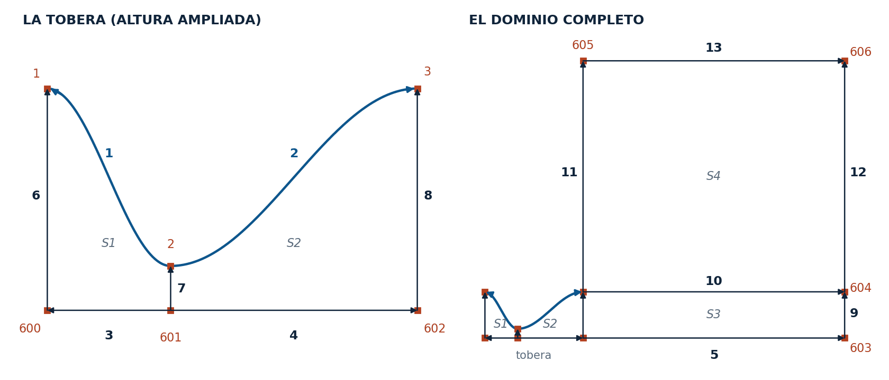
Figura 1.El mapa de la numeración. Los números en rojo son puntos; los negros, curvas, con la flecha en su sentido; S1 a S4, las superficies. A la izquierda la tobera, con la altura ampliada para que se lean los números; a la derecha el dominio completo, a escala. Las curvas 1 y 2 y los puntos 1, 2 y 3 vienen del contorno pegado; lo demás se agrega con los botones.
Por qué la pared se pega. La pared es una curva de coseno, \(H = H_t + (H_e - H_t)(1-\cos \pi s)/2\), con pendiente cero en la garganta, en la entrada y en la salida. Para que una Spline la siga, incluida la pendiente en la garganta, hacen falta muchos puntos: 200 por tramo (el 2.3.2 mide por qué). Escribirlos con el diálogo sería absurdo; un bucle For los crea en un segundo, como el contorno del perfil en el 2.2.1.
Receta
Del archivo vacío a la malla para OpenFOAM en nueve pasos
Todo se hace desde un archivo nuevo. Cada paso deja líneas en el archivo; entre paréntesis, lo que responde Gmsh.
La pared.File ▸ New, tobera.geo, núcleo Built-in. Geometry ▸ Edit script, pegar el contorno, guardar y Geometry ▸ Reload script (se ven las dos Spline y tres puntos).
Puntos.Geometry ▸ Elementary entities ▸ Add ▸ Point: los siete de la tabla 1, con Add después de cada uno (Point(600) = {0, 0, 0, 1.0}; … Point(606) = {22, 6, 0, 1.0};).
Líneas.Add ▸ Line: las once de la tabla 2, con dos clics cada una (Line(3) = {601, 600};).
Superficies.Add ▸ Plane surface: un clic en cada curva de un bloque, en orden, y e; cuatro veces (Plane Surface(1) = {1};).
Nodos y malla 2D.Mesh ▸ Define ▸ Transfinite ▸ Curve en los cinco grupos de la tabla 4; Transfinite ▸ Surface en cada bloque; Recombine en los cuatro; Mesh ▸ 2D (Done meshing 2D; 16 166 cuadriláteros).
Extrusión.Geometry ▸ Elementary entities ▸ Extrude ▸ Translate: DZ = 0.1, Extrude mesh con una capa y Recombine, Selection mode en Surfaces; un recuadro sobre todo y e.
Las caras laterales.Geometry ▸ Physical groups ▸ Add ▸ Surface: inlet, nozzleWall, axis, outlet y farField, cada uno con un clic sobre la línea de sus caras en la vista de arriba (tabla 5).
Adelante, atrás y el volumen.frontAndBack: clic en la cruz de cada bloque, girar la vista 180° con Tools ▸ Manipulator y otro clic en cada cruz; Add ▸ Volume: fluid con un recuadro.
Malla 3D y exportación.Mesh ▸ 3D (Tools ▸ Statistics: 16 166 hexaedros); File ▸ Export, tobera.msh, formato Version 2 ASCII.
Paso 1
Lo único que se pega
File ▸ New pide el nombre del archivo y después el núcleo geométrico: se elige Built-in, como en el 2.2.1, porque las Spline y el bucle son del núcleo propio de Gmsh. Con Geometry ▸ Edit script el archivo se abre en el editor; se reemplaza su contenido por el contorno, se guarda y se vuelve a leer con Geometry ▸ Reload script.
tobera_1_contorno.geo
// Tobera convergente-divergente · paso 1: el contorno de la pared (se pega; lo demás se hace con los botones)
// Pared de coseno: H(s) = Ht + (He − Ht)(1 − cos πs)/2, con s de 0 en la garganta a 1 en la entrada o la salida.
He = 1; // semialtura de la salida (m)
Ht = 0.2; // semialtura de la garganta (m): razón de áreas 5
Lc = 2; // largo del convergente (m)
Ld = 4; // largo del divergente (m)
n = 200; // intervalos de la pared en cada tramo
Point(1) = {0, He, 0}; // entrada
Point(2) = {Lc, Ht, 0}; // garganta
Point(3) = {Lc + Ld, He, 0}; // salida de la tobera (el labio)
For i In {1 : n - 1}
s = i / n;
H = Ht + (He - Ht) * (1 - Cos(Pi * s)) / 2;
Point(100 + i) = {Lc - Lc * s, H, 0}; // convergente: 101 a 299
Point(400 + i) = {Lc + Ld * s, H, 0}; // divergente: 401 a 599
EndFor
Spline(1) = {2, 101 : 100 + n - 1, 1}; // convergente, de la garganta a la entrada
Spline(2) = {2, 401 : 400 + n - 1, 3}; // divergente, de la garganta a la salida
// Sólo quedan visibles, y seleccionables en la interfaz, los tres puntos de los extremos.
Hide { Point{101 : 100 + n - 1, 401 : 400 + n - 1}; }
Las cinco primeras variables son la geometría de la tobera; quedan disponibles para los diálogos de los pasos siguientes. Los puntos de la pared se numeran del 101 al 299 (convergente) y del 401 al 599 (divergente), y cada Spline empieza en la garganta y termina en la entrada o en la salida. La última línea oculta todos los puntos intermedios: en la interfaz sólo quedan la entrada (1), la garganta (2) y el labio (3), que son los que se usan (figura 2).
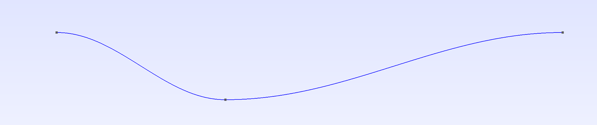
Figura 2.El contorno pegado. Después de Reload script: las dos Spline de la pared y sólo tres puntos, la entrada, la garganta y el labio. Los otros 398 puntos de la pared existen, pero Hide los oculta y así no se pueden tocar por error al hacer clic.
Paso 2
Siete puntos, con expresiones
Con Add ▸ Point se abre el diálogo Elementary Entity Context. Se escriben X e Y, se deja Z = 0 y se hace clic en Add; el punto aparece y el diálogo queda listo para el siguiente.
Punto
X
Y
Dónde está
600
0
0
eje, en la entrada
601
Lc
0
eje, bajo la garganta
602
Lc + Ld
0
eje, bajo la salida de la tobera
603
22
0
eje, en la salida del dominio
604
22
He
salida del dominio, a la altura del labio
605
Lc + Ld
6
campo lejano, sobre el labio
606
22
6
esquina de arriba del dominio
Tabla 1.Los siete puntos que se agregan. Lo que se escribe en los campos X e Y del diálogo Add ▸ Point; Z = 0. Los campos aceptan expresiones con las variables del contorno pegado, y el archivo guarda la expresión, no el número. La interfaz numera a partir del mayor punto que ya existe, el 599 de la pared.
Los campos aceptan expresiones con las variables del archivo: Lc + Ld es la salida de la tobera, x = 6, y He es la altura del labio. El archivo guarda la expresión, no el número, de modo que si después se cambia Ld en el contorno, los puntos se mueven con él. La interfaz numera a partir del mayor punto existente: como la pared llega al 599, el primero que se agrega es el 600.
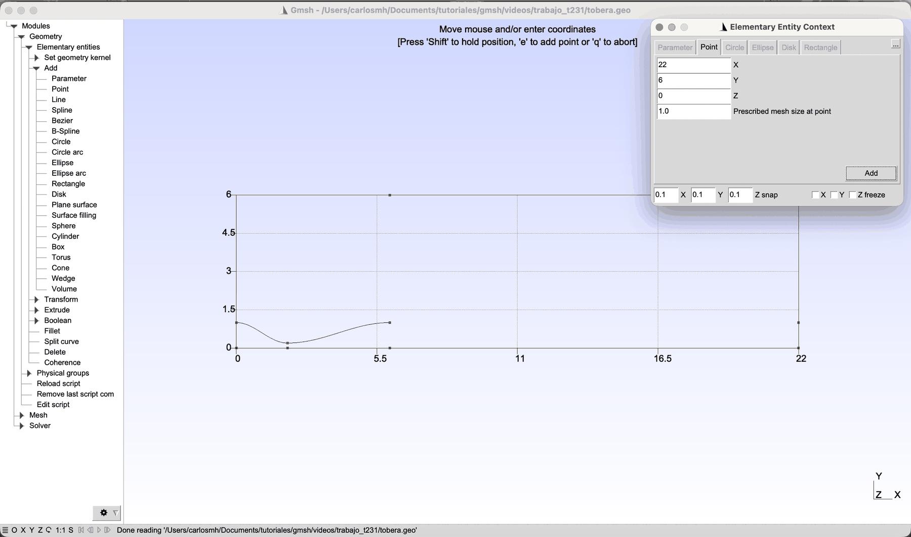
Figura 3.Un punto con una expresión.Geometry ▸ Elementary entities ▸ Add ▸ Point con el último punto, el 606, escrito: X = 22 e Y = 6. Antes se escribieron Lc, Lc + Ld y He, que el diálogo acepta porque son variables del contorno pegado. Con los puntos del eje y de las esquinas, Gmsh dibuja además unos ejes con las coordenadas del dominio.
Paso 3
Once líneas, y por qué importa su sentido
Con Add ▸ Line, cada línea son dos clics: el punto de inicio y el final. Después de la última, q termina.
Línea
Clic en
Qué es
3
601 → 600
eje del convergente
4
601 → 602
eje del divergente
5
602 → 603
eje del chorro
6
600 → 1
entrada
7
601 → 2
garganta
8
602 → 3
salida de la tobera
9
603 → 604
salida del dominio, junto al eje
10
3 → 604
borde del chorro
11
3 → 605
campo lejano, sobre el labio
12
604 → 606
salida del dominio, arriba
13
605 → 606
campo lejano, arriba
Tabla 2.Las once líneas, en el orden en que se hacen. Cada línea va del primer punto en que se hace clic al segundo, y ese sentido decide hacia dónde crece la progresión del paso 5. Las axiales salen de la garganta; las verticales, de abajo hacia arriba.
El sentido importa. La progresión de Transfinite hace crecer las celdas en el sentido de la curva: con una razón mayor que uno, la primera celda es la más pequeña. Las celdas finas se quieren en la garganta, así que las tres líneas del eje se trazan desde la garganta hacia afuera, igual que las dos Spline de la pared. Las verticales se trazan de abajo hacia arriba: las cuatro que cruzan la tobera y el chorro (6 a 9) llevan celdas iguales, y las dos del ambiente (11 y 12) crecen desde el borde del chorro hacia el campo lejano.
Paso 4
Cuatro bloques, curva por curva
Con Add ▸ Plane surface se hace clic en las cuatro curvas de un bloque, una tras otra alrededor del bloque, y e. Como los bloques comparten curvas, un solo clic no basta para que Gmsh encuentre el lazo, igual que en el 2.2.1.
Superficie
Clic en las curvas
Lazo que escribe la interfaz
Bloque
1
7, 1, 6, 3
{7, 1, −6, −3}
convergente
2
4, 8, 2, 7
{4, 8, −2, −7}
divergente
3
5, 9, 10, 8
{5, 9, −10, −8}
núcleo del chorro
4
10, 12, 13, 11
{10, 12, −13, −11}
ambiente
Tabla 3.Las cuatro superficies. Con Add ▸ Plane surface, un clic en cada curva, en este orden, y e. El lazo que escribe la interfaz empieza en la primera curva tocada; el signo menos indica que la curva se recorre al revés.
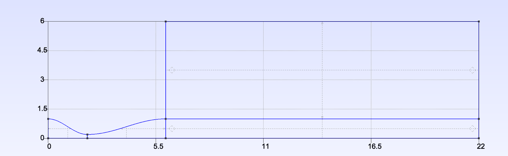
Figura 4.Las cuatro superficies. Cada superficie se dibuja como una cruz punteada; su trazo vertical cae en x = 1 y x = 4 en la tobera y en x = 14 en el chorro y el ambiente. Esas cruces son las que se tocan con Transfinite Surface, Recombine y, más adelante, en el grupo de las caras de adelante y de atrás.
Paso 5
Transfinite, Recombine y la malla 2D
Mesh ▸ Define ▸ Transfinite ▸ Curve abre el diálogo Mesh Context (figura 5). Para cada grupo se escriben el número de nodos y la progresión, se hace clic en las curvas y e.
Curvas
Nodos
Progresión
Qué reparten
1, 3
121
1.01356
el convergente: pared y eje
2, 4
242
1.00672
el divergente: pared y eje
5, 10, 13
93
1.03011
el chorro: eje, borde y campo lejano
6, 7, 8, 9
31
1
las cuatro verticales
11, 12
29
1.1037
el ambiente, del chorro hacia arriba
Tabla 4.Los cinco grupos de Transfinite Curve. En el diálogo Mesh ▸ Define ▸ Transfinite ▸ Curve: Number of points, Type = Progression y Parameter. Las curvas de un mismo grupo son lados opuestos de un bloque, así que llevan los mismos nodos y, como van en el mismo sentido, la misma progresión.
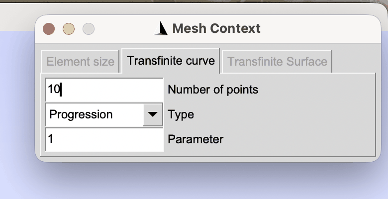
Figura 5.El diálogo de Transfinite Curve. Con el último grupo escrito: 29 nodos, Progression, parámetro 1.1037. Los valores se escriben antes de hacer clic en las curvas, y el diálogo los conserva entre un grupo y el siguiente.
Después, Transfinite ▸ Surface: un clic en la cruz de cada bloque y e, cuatro veces; y Recombine: un clic en las cuatro cruces y e, para que la malla sea de cuadriláteros. Mesh ▸ 2D responde Done meshing 2D, y Tools ▸ Statistics cuenta 16 166 cuadriláteros (figura 6).
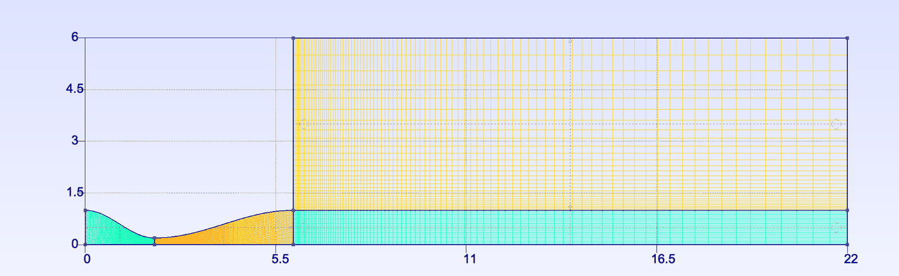
Figura 6.La malla 2D.Mesh ▸ 2D: 16 166 cuadriláteros. Los cuatro bloques con sus colores; las celdas son finas en la tobera y crecen hacia la salida del dominio y hacia arriba.
La rueda del ratón acerca la vista alrededor del puntero: con el puntero sobre la garganta se ven las celdas casi cuadradas que se pidieron (figura 7).
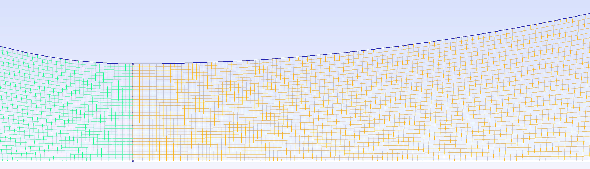
Figura 7.La garganta de cerca. Acercada con la rueda del ratón sobre la garganta. La línea vertical es la curva 7: a su izquierda el convergente, a su derecha el divergente, cada uno con su color. Junto a ella las celdas son casi cuadradas (30 en la semialtura de 0.2 m y 0.0067 m a lo largo del eje) y crecen poco a poco hacia la entrada y hacia la salida.
Ejemplo resuelto
De dónde salen 121 nodos y 1.01356
Enunciado. Explicar de dónde salen los 121 nodos y la progresión 1.01356 del convergente.
Condiciones. Se quieren celdas cuadradas en la garganta y en la entrada: 30 celdas en la semialtura en las dos estaciones, y el mismo largo a lo largo del eje.
Los dos tamaños. En la garganta la semialtura es 0.2 m, así que la celda mide h1 = 0.2/30 = 0.00667 m. En la entrada, 1 m, y la celda mide hN = 1/30 = 0.03333 m.
La progresión. En una progresión geométrica de razón r, la suma de las celdas es L = (r·hN − h1)/(r − 1), y la última celda es hN = h1·rN−2. De ahí salen las dos fórmulas:
\[ r = \frac{L - h_1}{L - h_N}, \qquad N = 2 + \frac{\ln(h_N/h_1)}{\ln r} \]
Con L = 2 m, r = (2 − 0.00667)/(2 − 0.03333) = 1.01356.
Los nodos. N − 2 = ln(hN/h1)/ln r = ln 5/ln 1.01356 = 119.499, que se redondea a 119: N = 121.
Son las fórmulas de la macro Empalme del 2.2.2. Con los tamaños de la salida (1/30 m) y la longitud del divergente (4 m) salen, del mismo modo, los 242 nodos y la razón 1.00672; y con la salida y una celda de 0.5 m en el campo lejano, los del chorro y el ambiente. El 2.3.2 escribe estas cuentas dentro del archivo, para que cambien solas con la geometría.
Preguntas.
¿Qué pasaría si al convergente se le dieran 45 nodos con razón 1.06, como en otros archivos de tobera? Respuesta: la última celda del convergente mediría 0.011 m y la primera del divergente seguiría otro reparto: un salto de tamaño justo en la garganta, donde el flujo es sónico. El 2.3.2 lo mide en la malla de la que parte.
¿Por qué la curva 7 (la garganta) lleva los mismos 31 nodos que la 6 y la 8? Respuesta: las tres son lados de bloques que se tocan; en una malla estructurada los lados opuestos de un bloque tienen el mismo número de nodos, y los bloques vecinos comparten sus lados.
Paso 6
Una capa, las cuatro superficies con un recuadro
Geometry ▸ Elementary entities ▸ Extrude ▸ Translate abre el diálogo Elementary Operation Context. Se escribe DZ = 0.1, se marca Extrude mesh con una capa (Mesh layers = 1) y Recombine, y en Selection mode se elige Surfaces, para que sólo se puedan tomar superficies (figura 8). Un recuadro sobre todo el dominio —Ctrl + clic en una esquina, mover y clic en la opuesta— toma las cuatro, y e extruye.
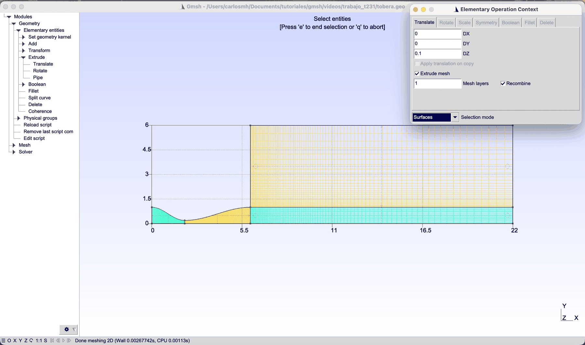
Figura 8.La extrusión, lista para elegir las superficies.Extrude ▸ Translate con DZ = 0.1, Extrude mesh marcado, una capa, Recombine y Selection mode en Surfaces. El diálogo se acomodó arriba a la derecha para que no tape el dominio; falta el recuadro sobre las cuatro superficies.
El espesor no importa para OpenFOAM, que trata el caso como 2D con las caras de adelante y de atrás de tipo empty; lo que importa es que haya una sola capa de celdas.
Pasos 7 y 8
Un clic sobre la línea de cada cara lateral
La extrusión creó, además de los cuatro volúmenes, una cara lateral por cada curva y una cara de adelante por cada superficie. Los grupos físicos las reúnen en las fronteras que usará OpenFOAM (tabla 5).
Grupo
Caras
Clic en
En OpenFOAM
inlet
30
la línea 6 (x = 0)
totalPressure
nozzleWall
26, 52
las dos paredes
wall (slip)
axis
34, 44, 66
el eje, en los tres tramos
symmetryPlane
outlet
70, 92
la línea 9 y la 12 (x = 22)
waveTransmissive
farField
96, 100
la línea 13 y la 11
totalPressure
frontAndBack
35, 57, 79, 101, 1, 2, 3, 4
la cruz de cada bloque, de frente y desde atrás
empty
fluid
1, 2, 3, 4
un recuadro sobre todo
—
Tabla 5.Los grupos físicos.Physical groups ▸ Add ▸ Surface (o Volume) con el nombre escrito en el campo Name, los clics de la tercera columna y e. Los números de las caras son los que escribió la interfaz; la última columna es el tipo del parche en OpenFOAM.
Las caras laterales: un clic sobre su línea
En la vista de arriba, cada cara lateral se ve de canto, sobre la curva que la generó, y su cruz punteada cae sobre esa línea. Con Physical groups ▸ Add ▸ Surface y el nombre escrito, un clic sobre la línea toma la cara: sobre la entrada, la cara 30; sobre cada tramo de la pared, las caras 26 y 52 (figura 9). Los clics se hacen lejos de las cruces de las caras de adelante —los trazos verticales en x = 1, 4 y 14 y los horizontales a media altura—, que también se podrían tomar.
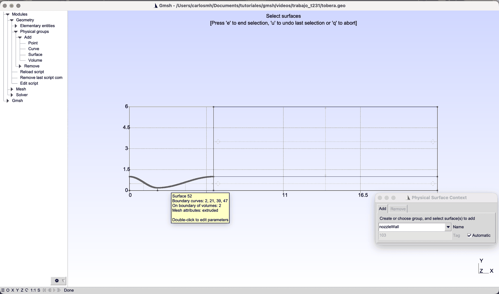
Figura 9.Una cara lateral, con un clic sobre su línea. El grupo nozzleWall: las dos caras de la pared quedan resaltadas después de un clic sobre cada tramo de la pared, en la vista de arriba. La etiqueta amarilla confirma lo que hay bajo el puntero: la superficie 52, extruida desde la curva 2.
El recuadro toma todo lo que toca. Para la extrusión funcionó porque se querían las cuatro superficies. Para un grupo, no: un recuadro angosto alrededor de la entrada tomó las caras 1, 26, 30, 34 y 35 —la entrada, pero también la pared, el eje y las caras de adelante y de atrás del convergente, que sólo tocan el recuadro—. Se comprobó leyendo la línea que escribió la interfaz.
Las caras de adelante y de atrás
En la vista de arriba las caras de z = 0.1 tapan a las de z = 0: un clic en la cruz de cada bloque toma las de adelante (35, 57, 79 y 101). Sin cerrar la selección, Tools ▸ Manipulator con rotación (0, 180, 0) gira la vista: el eje x queda al revés y las caras de z = 0 quedan adelante; otro clic en cada cruz las agrega (figura 10). Con e se cierra el grupo frontAndBack, con las ocho.
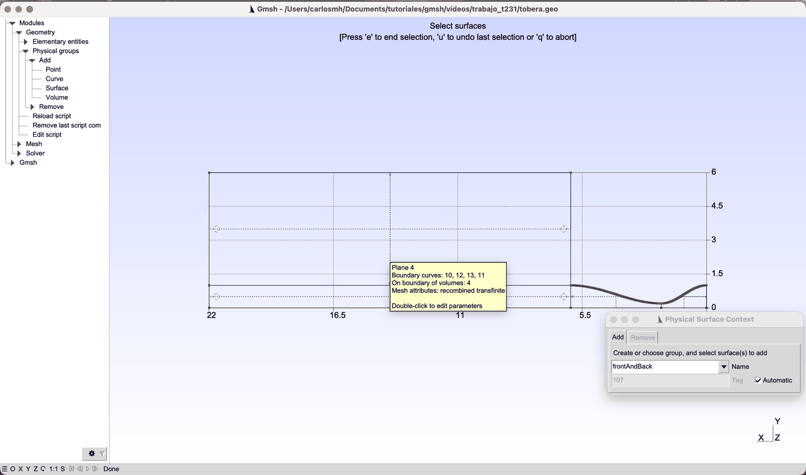
Figura 10.Las caras de atrás. Con la vista girada 180° en Tools ▸ Manipulator, el eje x queda al revés (22 a la izquierda) y las caras de z = 0 quedan adelante: un clic en la cruz de cada bloque las agrega a frontAndBack, que ya tenía las de z = 0.1.
El volumen se toma con Add ▸ Volume y un recuadro sobre todo: aquí sí conviene, porque se quieren los cuatro.
Una etiqueta amarilla confirma qué hay bajo el puntero. Al detener el puntero sobre una entidad, Gmsh muestra su número, sus curvas y los volúmenes que toca (en la figura 9, «Surface 52 … On boundary of volumes: 2»). Es la forma más rápida de saber qué va a tomar el siguiente clic.
Paso 9
16 166 hexaedros en MSH 2 ASCII
Mesh ▸ 3D extruye la malla: Tools ▸ Statistics cuenta 16 166 hexaedros, uno por cuadrilátero. Para OpenFOAM, File ▸ Export, el nombre tobera.msh y, en MSH Options, el formato Version 2 ASCII (figura 11), porque gmshToFoam no lee el formato 4.1 que Gmsh propone de fábrica.
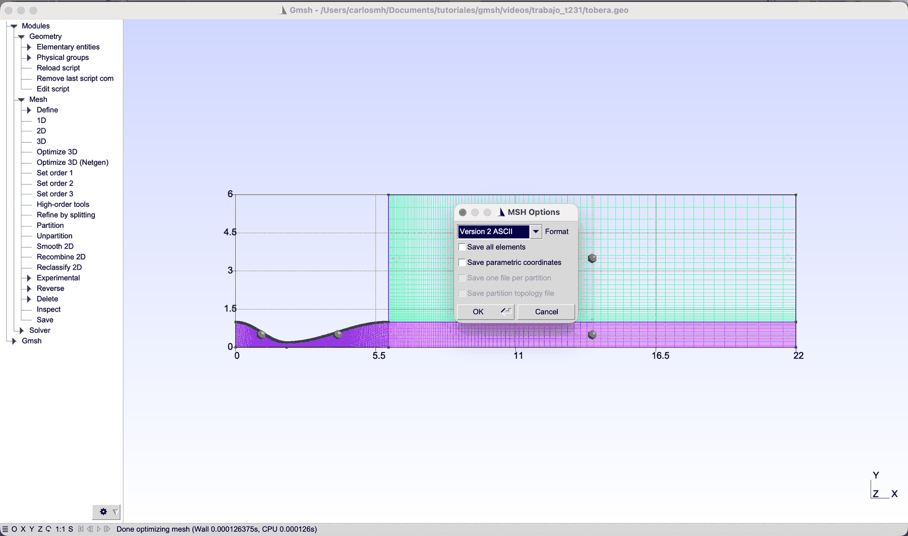
Figura 11.El formato para OpenFOAM.File ▸ Export, nombre tobera.msh: en MSH Options, el formato Version 2 ASCII, el único que lee gmshToFoam. Como en el 1.1, el desplegable se abre detrás del diálogo y se elige con dos flechas hacia arriba e Intro.
El archivo que resulta es idéntico al que escribe el .geo de la sección «Archivo» corrido desde la terminal: los 33 356 nodos coinciden a distancia cero. Y la malla es la mitad de arriba de la tobera plana del 2.3.2: sus celdas coinciden con las de aquélla a menos de 0.4 mm, la diferencia que dejan las progresiones escritas con seis cifras.
Comprobación en OpenFOAM
¿Da la mitad lo mismo que la tobera completa?
El caso es el del 2.3.2 (datos-t231/openfoam/caso): flujo no viscoso con shockFluid, p0 = 1 y T0 = 1 en la entrada, paredes slip y la presión de descarga en la salida y el campo lejano, con dos valores: el de diseño, pb/p0 = 0.0210, y uno que pone un choque normal en el divergente, 0.504. La única diferencia es el parche del eje, que gmshToFoam deja como patch y hay que cambiar:
checkMesh responde Mesh OK con 16 166 celdas y una no ortogonalidad máxima de 33.8°. En los archivos de 0/, el parche axis lleva type symmetryPlane; en p, U y T.
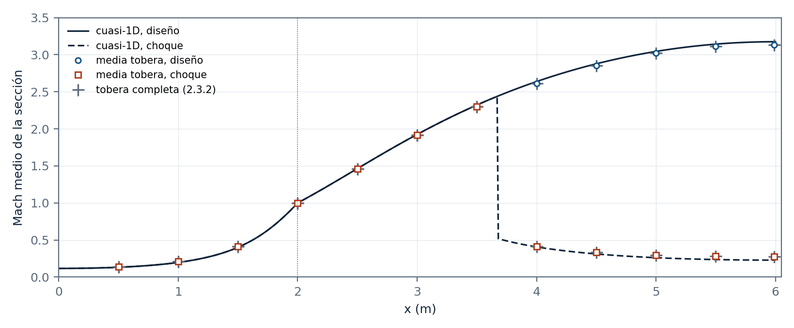
Figura 12.La media tobera da lo mismo que la completa. Mach medio de cada sección en la media tobera (círculos y cuadros), en la tobera completa del 2.3.2 (cruces) y en la teoría cuasi-unidimensional (líneas), en diseño y con el choque normal en el divergente. Hasta x = 3.5 m los dos casos coinciden y los cuadros tapan a los círculos.
Caso
Garganta: media · completa
Salida: media · completa
Diferencia máxima
Choque en el eje
Diseño
0.9999 · 0.9998
3.1307 · 3.1307
0.01 %
—
Choque
0.9999 · 0.9997
0.2755 · 0.2756
0.05 %
3.687 m · 3.687 m
Tabla 6.La media tobera contra la tobera completa. El mismo caso de OpenFOAM 13 que el 2.3.2 (shockFluid sin viscosidad, campos promediados en el tiempo), con el eje como plano de simetría. «Media» es el Mach de la sección promediado con el gasto; «completa», el de la tobera plana del 2.3.2, con el doble de celdas.
La media tobera da el mismo Mach medio que la tobera completa en cada sección: la mayor diferencia es del 0.01 % en diseño y del 0.05 % con el choque, y el choque queda en el mismo lugar del eje, x = 3.687 m (la teoría lo pone en 3.678 m). Y lo da con la mitad de celdas. La comparación con la teoría cuasi-unidimensional —por qué la media sigue a la teoría y el eje no— está en el 2.3.2.
Archivo
Lo que escribió la interfaz
Lo que escribió la interfaz siguiendo este tutorial, sin las marcas //+ que agrega después de cada orden. El principio es el contorno pegado; todo lo que sigue a Hide lo escribieron los botones. proyecto/tobera_botones/tobera_botones.geo es el mismo archivo con comentarios, y da la misma malla.
tobera_interfaz.geo
// Tobera convergente-divergente · paso 1: el contorno de la pared (se pega; lo demás se hace con los botones)
// Pared de coseno: H(s) = Ht + (He − Ht)(1 − cos πs)/2, con s de 0 en la garganta a 1 en la entrada o la salida.
He = 1; // semialtura de la salida (m)
Ht = 0.2; // semialtura de la garganta (m): razón de áreas 5
Lc = 2; // largo del convergente (m)
Ld = 4; // largo del divergente (m)
n = 200; // intervalos de la pared en cada tramo
Point(1) = {0, He, 0}; // entrada
Point(2) = {Lc, Ht, 0}; // garganta
Point(3) = {Lc + Ld, He, 0}; // salida de la tobera (el labio)
For i In {1 : n - 1}
s = i / n;
H = Ht + (He - Ht) * (1 - Cos(Pi * s)) / 2;
Point(100 + i) = {Lc - Lc * s, H, 0}; // convergente: 101 a 299
Point(400 + i) = {Lc + Ld * s, H, 0}; // divergente: 401 a 599
EndFor
Spline(1) = {2, 101 : 100 + n - 1, 1}; // convergente, de la garganta a la entrada
Spline(2) = {2, 401 : 400 + n - 1, 3}; // divergente, de la garganta a la salida
// Sólo quedan visibles, y seleccionables en la interfaz, los tres puntos de los extremos.
Hide { Point{101 : 100 + n - 1, 401 : 400 + n - 1}; }
Point(600) = {0, 0, 0, 1.0};
Point(601) = {Lc, 0, 0, 1.0};
Point(602) = {Lc + Ld, 0, 0, 1.0};
Point(603) = {22, 0, 0, 1.0};
Point(604) = {22, He, 0, 1.0};
Point(605) = {Lc + Ld, 6, 0, 1.0};
Point(606) = {22, 6, 0, 1.0};
Line(3) = {601, 600};
Line(4) = {601, 602};
Line(5) = {602, 603};
Line(6) = {600, 1};
Line(7) = {601, 2};
Line(8) = {602, 3};
Line(9) = {603, 604};
Line(10) = {3, 604};
Line(11) = {3, 605};
Line(12) = {604, 606};
Line(13) = {605, 606};
Curve Loop(1) = {7, 1, -6, -3};
Plane Surface(1) = {1};
Curve Loop(2) = {4, 8, -2, -7};
Plane Surface(2) = {2};
Curve Loop(3) = {5, 9, -10, -8};
Plane Surface(3) = {3};
Curve Loop(4) = {10, 12, -13, -11};
Plane Surface(4) = {4};
Transfinite Curve {1, 3} = 121 Using Progression 1.01356;
Transfinite Curve {2, 4} = 242 Using Progression 1.00672;
Transfinite Curve {5, 10, 13} = 93 Using Progression 1.03011;
Transfinite Curve {6, 7, 8, 9} = 31 Using Progression 1;
Transfinite Curve {11, 12} = 29 Using Progression 1.1037;
Transfinite Surface {1};
Transfinite Surface {2};
Transfinite Surface {3};
Transfinite Surface {4};
Recombine Surface {1, 2, 3, 4};
Extrude {0, 0, 0.1} {
Surface{1}; Surface{2}; Surface{3}; Surface{4}; Layers {1}; Recombine;
}
Physical Surface("inlet", 102) = {30};
Physical Surface("nozzleWall", 103) = {26, 52};
Physical Surface("axis", 104) = {34, 44, 66};
Physical Surface("outlet", 105) = {70, 92};
Physical Surface("farField", 106) = {96, 100};
Physical Surface("frontAndBack", 107) = {35, 57, 79, 101, 1, 2, 3, 4};
Physical Volume("fluid", 108) = {1, 2, 3, 4};
Práctica sugerida
Tres cambios a mano
Tres cambios, todos con la interfaz. En cada uno, predecir primero y comprobar después con Tools ▸ Statistics.
1. Un divergente más largo
En el contorno pegado, cambiar Ld = 4 por Ld = 6, guardar y Reload script. ¿Qué puntos se mueven y por qué?
Con la fórmula del ejemplo resuelto, calcular los nodos y la razón del divergente para celdas de 1/150 m en la garganta y de 1/30 m en la salida, y corregir el grupo de Transfinite Curve de las curvas 2 y 4.
2. Una malla el doble de fina
Con 60 celdas en la semialtura, ¿cuánto miden las celdas de la garganta y de la salida? ¿Cuántos nodos y qué razón lleva el convergente?
¿Cuántas celdas tendrá la malla? Comprobarlo con Statistics.
3. La tobera completa con los botones
Agregar la mitad de abajo: la pared de abajo en el contorno pegado (con -H), los puntos, las líneas y las superficies que faltan.
¿Qué grupo desaparece y cuáles cambian? ¿Cuántas caras tiene ahora frontAndBack?
Comparar el tiempo de cálculo con el de la media tobera, con el mismo caso de OpenFOAM.
Puntos clave
Lo que hay que retener
Se pega lo que sería tedioso con clics —una pared de 400 puntos— y lo demás se hace con los botones; la interfaz escribe cada orden en el archivo.
Los campos de los diálogos aceptan expresiones con las variables del archivo, y el archivo guarda la expresión.
El sentido de cada línea decide hacia dónde crece la progresión: las axiales, desde la garganta hacia afuera.
Los nodos salen de pedir tamaños de celda: r = (L − h1)/(L − hN) y N = 2 + ln(hN/h1)/ln r.
En los grupos físicos, cada cara lateral se toma con un clic sobre su línea en la vista de arriba; el recuadro toma todo lo que toca. Las caras de atrás, con la vista girada 180°.
Si la geometría y el flujo son simétricos, se malla la mitad y el eje es un symmetryPlane: mismo resultado, mitad de celdas.
Errores frecuentes
Lo que falla y lo que hace Gmsh
Lo que pasa
La causa
Qué hacer
Un grupo físico tiene caras de más
Se eligió con un recuadro: toma todo lo que toca
Un clic sobre la línea de cada cara lateral; u deshace el último
Las celdas finas quedan en la entrada y no en la garganta
La línea del eje se trazó de la entrada a la garganta
Trazar las axiales desde la garganta, o usar la razón inversa (1/1.01356)
Plane surface no cierra el lazo
Un solo clic en un bloque que comparte curvas
Clic en las cuatro curvas, una tras otra alrededor del bloque
El clic en la pared toma un punto de la Spline
Falta el Hide del contorno
Pegar el contorno completo, con su última línea
frontAndBack queda con cuatro caras
Sólo se tomaron las de adelante
Girar la vista 180° con el Manipulator antes de cerrar la selección
gmshToFoam: Attempt to get back from bad stream
Exportado en MSH 4.1
Version 2 ASCII en MSH Options
OpenFOAM avisa Removing patchGroup 'wall'
Un grupo llamado wall
Otro nombre, como nozzleWall (el hallazgo del 2.2.1)
Fuentes
Referencias
C. Geuzaine y J.-F. Remacle. Gmsh Reference Manual, versión 4.15: la interfaz gráfica, Transfinite, Extrude y los grupos físicos. gmsh.info/doc/texinfo/gmsh.html.
J. D. Anderson. Modern Compressible Flow, 3.ª ed. McGraw-Hill, 2003. Capítulo 5: flujo cuasi-unidimensional en toberas.
Vollständige deutsche Übersetzung in Vorbereitung. Jeder Abschnitt enthält eine Zusammenfassung; der vollständige Text mit Abbildungen und Tabellen liegt in der spanischen Fassung vor, die über die Schaltfläche ES oben erreichbar ist.
Eine Laval-Düse mit Abströmgebiet über die Gmsh-Oberfläche aufbauen; Punkte mit Ausdrücken, Linien, Flächen, Transfinite und Recombine mit den Schaltflächen; extrudieren und physikalische Gruppen per Klick festlegen; in MSH 2 exportieren; die Achse in OpenFOAM als Symmetrieebene nutzen.
Die Idee
Die obere Hälfte vernetzen und die Achse zur Symmetrieebene machen
Die ebene Düse ist symmetrisch zur Achse; vernetzt wird nur die obere Hälfte: halb so viele Zellen und Klicks. Die Achse wird zum Patch symmetryPlane.
Ablauf
Von der leeren Datei zum OpenFOAM-Netz in neun Schritten
Neun Schritte, jeweils mit dem, was Gmsh schreibt oder antwortet.
Schritt 1
Das Einzige, was eingefügt wird
Die Kosinuswand mit 200 Punkten je Abschnitt wird per For-Schleife, zwei Splines und Hide eingefügt; alles Übrige geschieht über die Schaltflächen.
Schritt 2
Sieben Punkte mit Ausdrücken
Sieben Punkte; die Dialogfelder nehmen Ausdrücke wie Lc + Ld an.
Schritt 3
Elf Linien und warum ihre Richtung zählt
Elf Linien; die axialen beginnen am Hals, damit jede Progression größer als eins ist.
Schritt 4
Vier Blöcke, Kurve für Kurve
Vier ebene Flächen, die vier Kurven jedes Blocks der Reihe nach anklicken.
Schritt 5
Transfinite, Recombine und das 2D-Netz
Fünf Gruppen Transfinite Curve, Transfinite Surface je Block, Recombine und Mesh 2D: 16 166 Vierecke.
Durchgerechnetes Beispiel
Woher 121 Knoten und 1,01356 kommen
Die Verteilung im konvergenten Teil von Hand aus quadratischen Zellen in Hals und Austritt.
Schritt 6
Eine Schicht, die vier Flächen mit einem Rahmen
Extrude ▸ Translate mit DZ = 0,1, einer Schicht und Recombine; ein Rahmen wählt die vier Flächen.
Schritte 7 und 8
Ein Klick auf die Linie jeder Seitenfläche
Der Rahmen wählt alles, was er berührt; jede Seitenfläche wird daher per Klick auf ihre Linie in der Draufsicht gewählt; Vorder- und Rückflächen von vorn und, bei um 180° gedrehter Ansicht, von hinten.
Schritt 9
16 166 Hexaeder in MSH 2 ASCII
Mesh 3D ergibt 16 166 Hexaeder; File ▸ Export in MSH 2 ASCII.
Prüfung in OpenFOAM
Liefert die Hälfte dasselbe wie die ganze Düse?
Mit der Achse als Symmetrieebene stimmt die querschnittsgemittelte Machzahl der halben Düse bis auf 0,05 % mit der ganzen Düse aus Tutorial 2.3.2 überein, bei Auslegung und mit senkrechtem Stoß.
Datei
Was die Oberfläche geschrieben hat
Die von der Oberfläche geschriebene Datei, in der Reihenfolge der Schritte.
Übungsvorschlag
Drei Änderungen von Hand
Ein längerer divergenter Teil, ein feineres Netz und die ganze Düse mit den Schaltflächen.
Kernpunkte
Was man behalten sollte
Einfügen, was mühsam zu klicken ist; den Rest klicken; die Hälfte vernetzen, wenn die Strömung symmetrisch ist.
Häufige Fehler
Was schiefgeht und was Gmsh tut
Rahmenauswahl für Seitenflächen, falsch gerichtete Linien, ein Wandpatch namens wall.